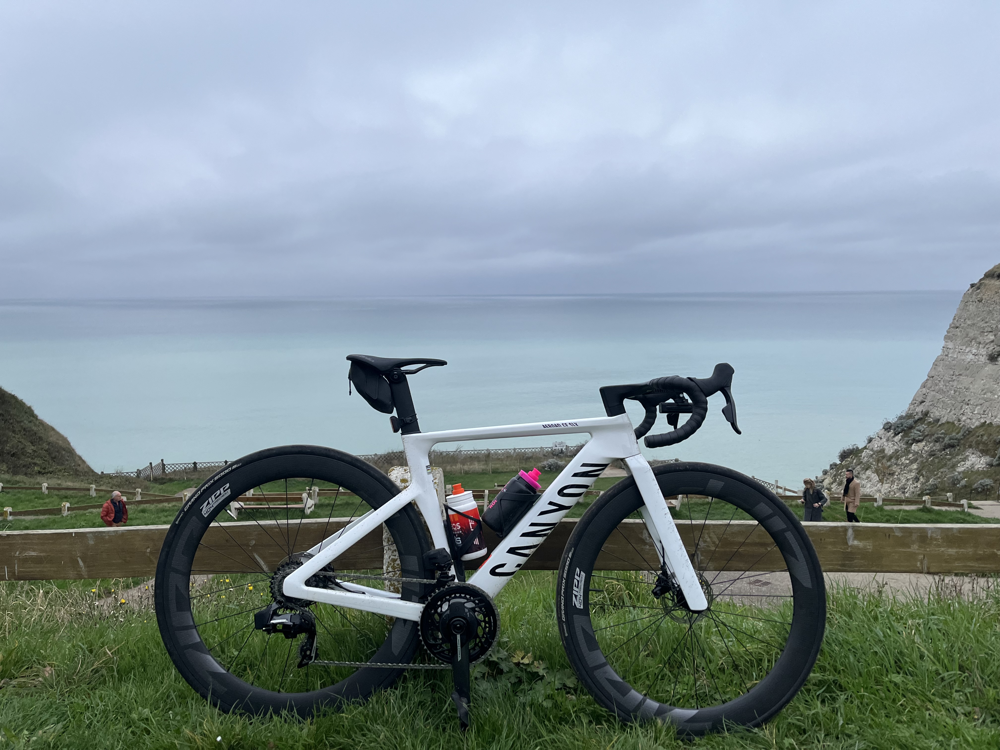
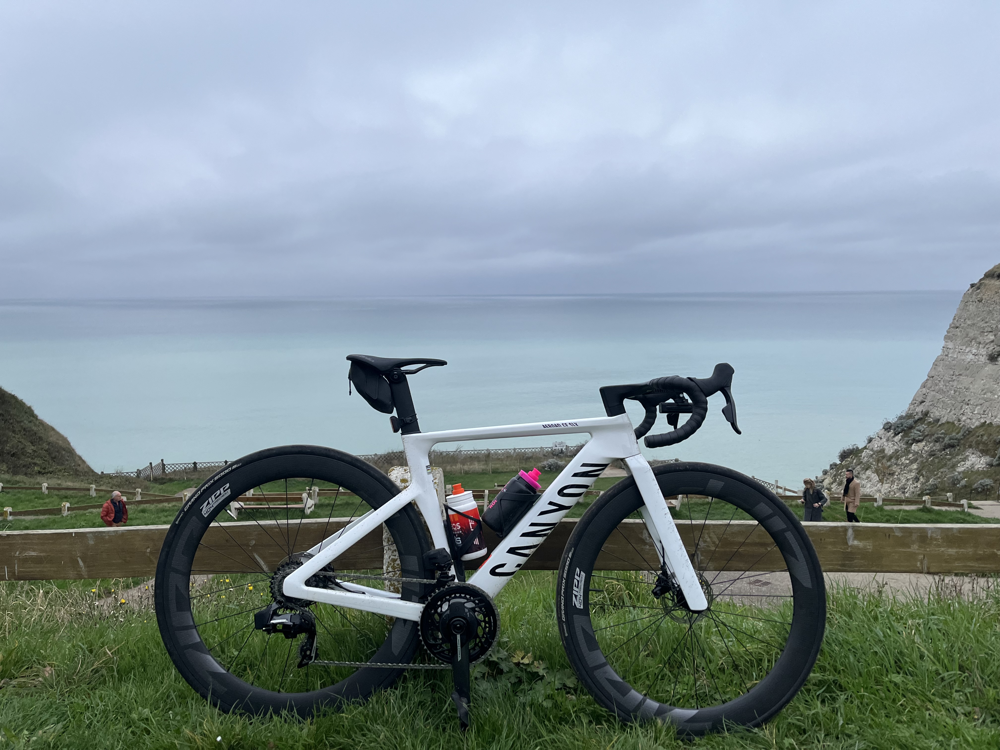

Je me présente
Bonjour, je suis Florian Vigneux actuellement étudiant en première année de BUT Réseaux et Télcommunications. J'ai choisi cette formation car j'ai toujours aimé bidouiller dans le domaine de l'informatique et espère pouvoir mettre à profit ces compétences dans ma future vie professionnelle.
Pourquoi ce site ?
Quand je ne suis pas devant mon bureau, je passe la plupart de mon temps libre à rouler que ce soit en groupe ou tout seul. Ça fait environ une année que je me suis pleinement mis à la pratique du cyclisme.
 

J'ai pu en septembre 2024 participer à la cyclosportive La Ronde Picarde organisée à Eaucourt sur Somme en Picardie comprenant plus de 1500 participants. J'ai fini 266e sur 495 au classement général du moyen parcours.